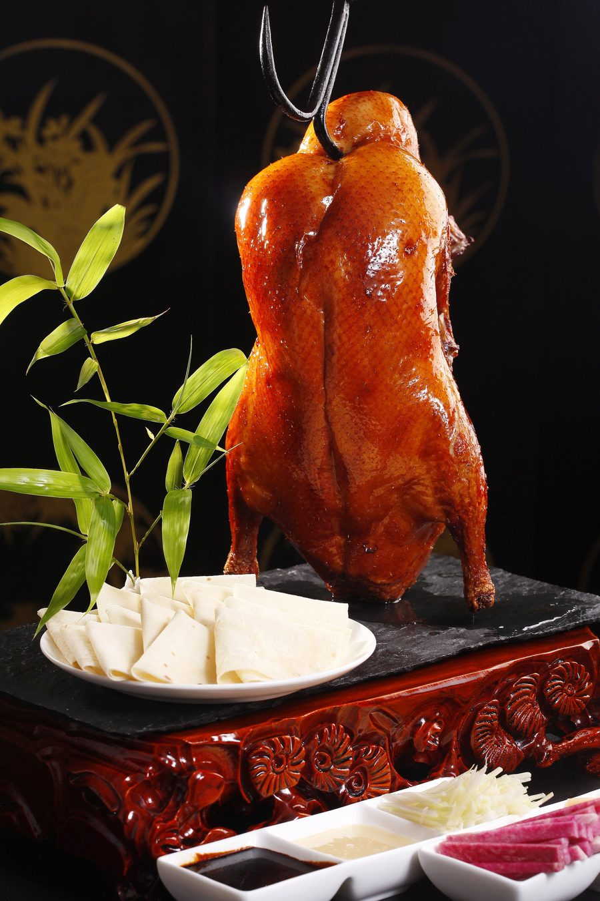

Traditional recipes. Real ingredients. A menu deep enough to get lost in.
Zhang's Bistro 川味张 is Carrollton's destination for authentic Sichuan cuisine — the bold, vibrant flavors of one of China's most fearless culinary regions. We're a family-run kitchen, and it shows: every dish is built from traditional recipes and the finest ingredients we can source, rich in flavor, aroma and texture.
That means real chili oil, not a bottled shortcut. Sichuan peppercorn for the numbing tingle of málà, not a watered-down imitation. Mapo tofu simmered until it's silk, dry-fried chicken tossed to order so it stays crackling, and a wok that rarely gets a break between 11 and 10.
Our menu runs deep on purpose — 179 dishes across noodles, dry pot, live fish and chef specials that most Sichuan restaurants don't even attempt. Regulars know that if something isn't on the list, it's worth asking anyway.
「麻辣鲜香」
Numbing, spicy, fresh, fragrant — the four pillars of Sichuan flavor.

Sichuan peppercorn for the tingling numbness that defines the region — not just chili heat standing in for it.
It goes into cold dishes, dry pots and mapo tofu alike — a base ingredient, not a drizzle on top.
Traditional recipes built on the finest ingredients we can source, cooked the moment you order so every dish arrives at its peak.
Dry-fried and stir-fried dishes come straight off a screaming-hot wok, fragrant with garlic, ginger and chili.
Dine in for the full spread, or order ahead and we'll have it ready for pickup or delivery.